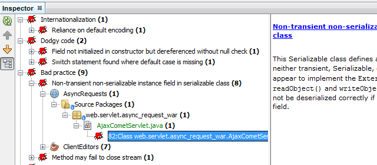

Testando e Analisando Código

Clique na imagem para exibição em tela inteira
Quando você estiver testando sua aplicação, o IDE fornecerá ferramentas para usar JUnit e TestNG, assim como analisadores de código e, especificamente, a FindBugs.

Testando
O IDE permite criar testes usando assistentes e modelos dos conhecidos frameworks de teste JUnit e TestNG.
Quando você criar testes para as classes Java, poderá executá-los individualmente ou ao mesmo tempo.
A janela Resultados do Teste mostra os resultados dos testes executados.
Gravando Testes JUnit no NetBeans IDEVídeo do Uso do TestNG no NetBeans IDE

Análise de Código
Ferramentas de análise estática são integradas ao IDE. Usando padrões de código predefinidos pelo IDE, por colaboradores ou por você mesmo, você poderá pesquisar sua base de código em busca de constructos de código antigos, erros de sintaxe comuns ou outros problemas. Por exemplo, você pode pesquisar com todas as aplicações simultaneamente em busca de classes internas anônimas que tenham um único método abstrato e atualizá-las para expressões lambda Java 8.
Em particular, o IDE oferece suporte para a conhecida ferramenta de código-fonte FindBugs. A FindBugs é uma ferramenta de análise estática que permite identificar bugs no código Java.
Análise de Código Estático no Editor de Java do NetBeans IDE
Consulte Também
- Página de Release do NetBeans IDE 8.1 para obter uma lista de funcionalidades específicas da última versão estável.
- Trilha de Aprendizado em Desenvolvimento Geral de Java para tutoriais que o ajudarão a começar.